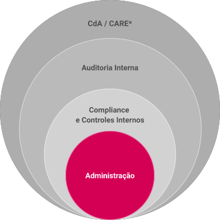
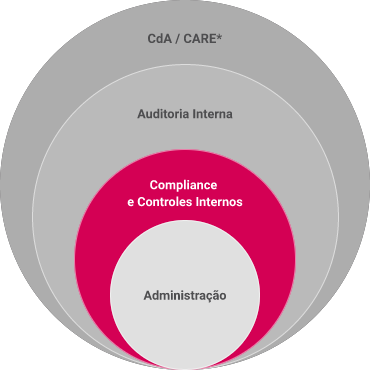
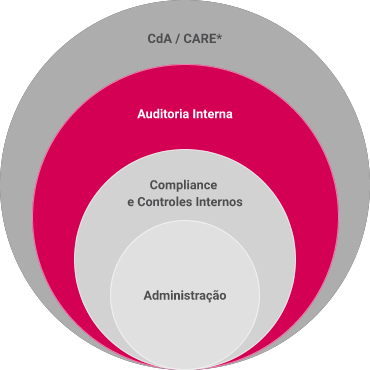
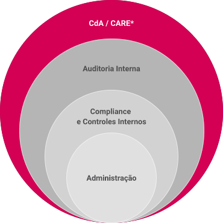

Os 3 níveis de proteção do SCI (Sistema de Controles Internos)
O Modelo de Três Linhas de Defesa ajuda as organizações a identificar estruturas e processos que melhor auxiliam no alcance dos objetivos, e facilitam uma forte governança e gerenciamento de riscos.

1° Nível de Proteção Os papéis de primeira linha estão mais diretamente alinhados com a entrega de produtos e/ou serviços aos clientes da organização, incluindo funções de apoio.

2° Nível de Proteção Os papéis de segunda linha podem incluir monitoramento, assessoria, orientação, teste, análise e reporte sobre assuntos relacionados ao gerenciamento de riscos. Os papéis podem se concentrar em objetivos específicos, como: conformidade com leis, regulamentos e comportamento ético aceitável; controle interno; sustentabilidade; e avaliação da qualidade, além do gerenciamento de riscos corporativos (enterprise risk management – ERM).

3° Nível de Proteção Os papéis da terceira linha estão relacionados à auditoria interna, que efetua avaliação e assessoria independentes e objetivas sobre a adequação e eficácia da governança e do gerenciamento de riscos.

Órgãos de Controle de Governança Normalmente não é considerado na literatura como o 4º nível de proteção, porém a existência dos órgãos máximos de Governança, auxiliam e monitoram todo o ambiente de Controles Internos.
* CdA - Conselho de Administração / CARE - Comitê de Auditoria, Riscos e Ética